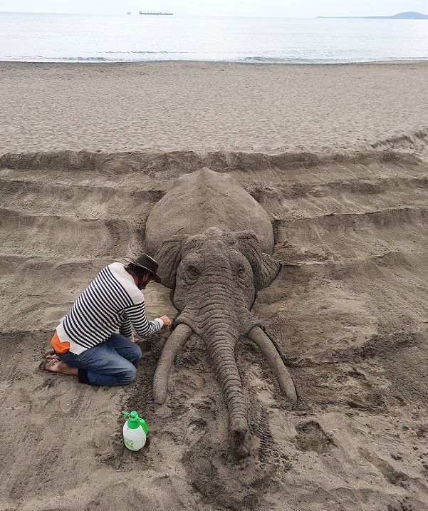
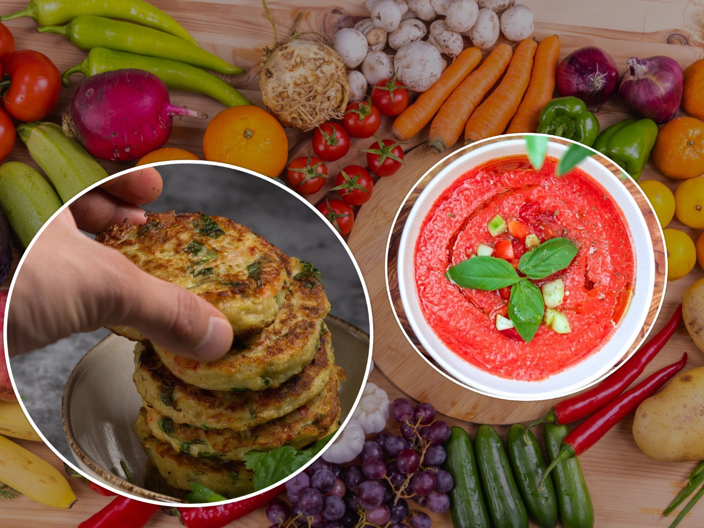

Viaggi sostenibili
Saluta la nuova stagione di gratuiti art sabbia laboratori a Burgas! 24 luglio 2024Scopri di più degli progetti creativi e gratuiti che si può reare ogni settimana in spiaggia a Burgas!
Tatyana Garkavaya

Ricette facili
2 piatti tipici ucraini e bulgari per un fine settimana gustoso 15 agosto 2023Prova due piatti gustosi di verdure per piacevoli weekend: deruny, frittelle di patate + salsa Lyutenitsa!
Tatyana Garkavaya

Scambi culturali
Collegando le capitali europee della cultura 10 gennaio 2020È il primo post di questo blog. Inizia qui se vuoi sapere delle esperienze che mi hanno ispirata a creare i Cultural Insights!
Tatyana Garkavaya